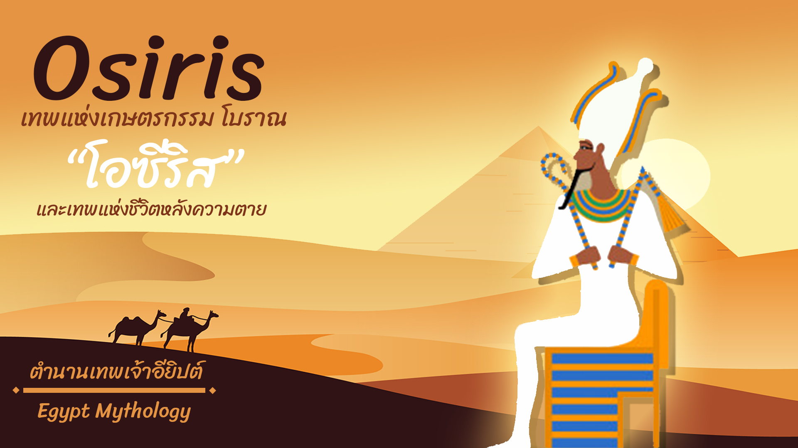

โอไซริส (อังกฤษ: Osiris; กรีกโบราณ: Ὄσιρις) เป็นเทพอียิปต์ซึ่งมักได้รับการระบุว่า เป็นเทพแห่งชีวิตหลังความตาย เทพแห่งนรก และเทพแห่งวิญญาณ เดิมทีเชื่อกันว่า เป็นบุรุษเพศ มีกายสีเขียว มีมัสสุดังฟาโรห์
กายเบื้องล่างพันผ้าห่อศพไว้ ฉลองมงกุฏประดับขนนกกระจอกเทศสองข้าง หัตถ์ทั้งสองถือตะขอกับไม้หวดข้าวเซธ (Seth) โอไซริสเป็นโอรสของเก็บ (Geb) เทพผืนดิน กับนัต (Nut) เทพีท้องฟ้า ทั้งเป็นเชษฐภาดาและภัสดาของไอซิส (Isis) มีโอรสด้วยกันหนึ่งองค์เมื่อสิ้นชนม์ไปแล้ว
คือ ฮอรัส (Horus) โอไซริสยังเกี่ยวเนื่องกับสมญาที่ว่า "เค็นที-อาเมนทีอู" (Khenti-Amentiu) แปลว่า ที่สุดแห่งชาวตะวันตก ซึ่งหมายถึง การได้ปกครองนรกภูมิ โอไซริสในฐานะมัจจุราชนั้นบางทีได้รับการเรียกขานว่า "เจ้าชีวิต" (king of the
living) เพราะชาวอียิปต์โบราณถือว่า วิญญาณที่ได้รับเซ่นสรวงบูชานั้นเป็น "สิ่งมีชีวิต" (living one)

โอไซริส ปรากฏเป็นครั้งแรกในช่วงกลางราชวงศ์ที่ห้าแห่งอียิปต์ แต่น่าเชื่อว่า ได้รับการเคารพบูชามาก่อนหน้านั้นแล้ว นอกจากนี้ สมญา "เค็นที-อาเมนทีอู" ยังปรากฏย้อนหลังไปถึงราชวงศ์ที่หนึ่งโดยเป็นสมัญญาสำหรับพระมหากษัตริย์ด้วย เรื่องราวเกี่ยวกับโอไซริสนั้นส่วนใหญ่ได้มาจากการกล่าวถึงในตำราพีระมิด (Pyramid Texts) ซึ่งแต่งขึ้นเมื่อปลายราชวงศ์ที่ห้า ตลอดจนเอกสารในชั้นหลัง ๆ เช่น ศิลาชาบากา (Shabaka Stone) และคัมภีร์เรื่อง การชิงชัยระหว่างฮอรัสกับเซท (Contending of Horus and Seth) รวมถึงการพรรณนาในงานเขียนของปรัชญาเมธีกรีกหลายคน เช่น พลูตาร์ก (Plutarch) และดีโอโอรัส ซีกูลัส (Diodorus Siculus)

ในนรกภูมิ ถือว่า โอไซริสเป็นตุลาการผู้เปี่ยมเมตตา ทั้งยังทำหน้าที่แทนนรกในการบันดาลให้เกิดสรรพชีวิต รวมถึง การแตกหน่อก่อผลของพืชผัก และการสร้างน้ำท่วมเพื่อความอุดมสมบูรณ์ริมฝั่งไนล์ นอกจากนี้ โอไซริสยังได้ชื่อว่าเป็น
"กามเทพ", "พระผู้ปราศศัตรูและทรงเยาว์วัยตลอดกาล" และ "เจ้าแห่งความสงัด" พระเจ้าแผ่นดินอียิปต์จะทรงเป็นส่วนหนึ่งของโอไซริสเมื่อสิ้นพระชนม์แล้ว
เชื่อกันว่า เมื่อสิ้นพระชนม์ โอไซริสจะสถิตอยู่ในพระวิญญาณ และพระวิญญาณที่มีโอไซริสเป็นส่วนหนึ่งนี้จะดำรงอยู่ชั่วกัลปาวสานหลังผ่านพิธีกรรมทางไสยเวทบางประการ ครั้นถึงช่วงอาณาจักรใหม่ ความเชื่อเปลี่ยนไปว่า ใช่แต่พระเจ้าแผ่นดินเท่านั้นที่จะเข้ารวมกับโอไซริสในโลกหลังความตาย
บุคคลธรรมดาสามัญทั้งหลายก็ด้วย แต่ต้องผ่านพิธีกรรมทำนองเดียวกัน